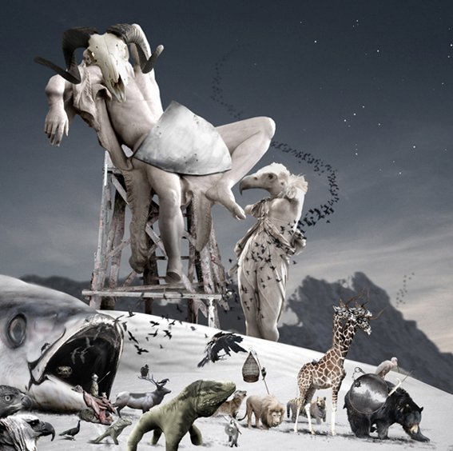
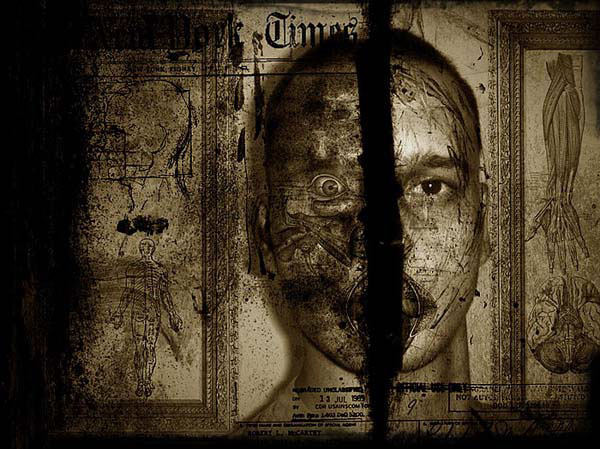
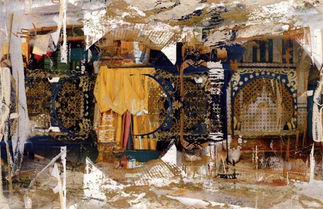
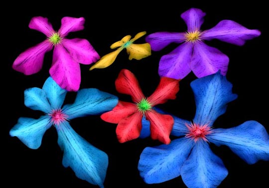
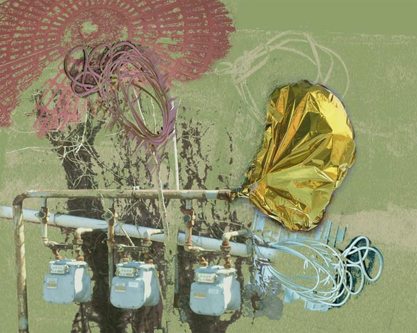
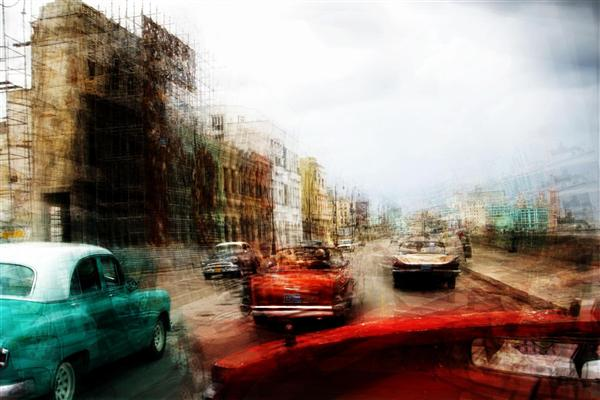
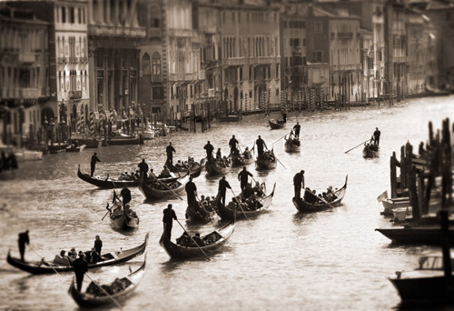

IMAGES OF THE DAY 93
01/11/2024 - 01/20/2024

01/11/2024
Photo-Based
Genesis Calendar
January
Warming of the Fire (The Creation)
by Chris Bennett
Click image to access artist's full exhibit

01/12/2024
Photo-Based
Dark Photography
Behind the Story I
by Marko Beslac
Click image to access artist's full exhibit

01/13/2024
Photo-Based
Transmuted Photography
Morocco IIB.3
by Thomas Bijon
Click image to access artist's full exhibit

01/14/2024
Photo-Based
Enhanced Photography
Spinning Clematis
by Steve Bingham
Click image to access artist's full exhibit
01/15/2024
Photo-Based
Dark Art
Bound
by Mike Bohatch
Click image to access artist's full exhibit
01/16/2024
Photo-Based
Humanscapes
Pixel 1
by Nathan Brusovani
Click image to access artist's full exhibit


01/17/2024
Photo-Based
Street Scenes
Against Expectations
by Carol Caputo
Click image to access artist's full exhibit

01/18/2024
Photo-Based
Digital Collage
IMG_5898
by Brut Carniollus
Click image to access artist's full exhibit
01/19/2024
Photo-Based
Eye and Mind
Primal Perception
by Charles H. Carver
Click image to access artist's full exhibit


01/20/2024
Photo-Based
Photo Manipulation
Venice, Italy
by Peter Casolino
Click image to access artist's full exhibit